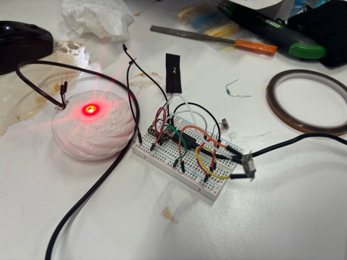
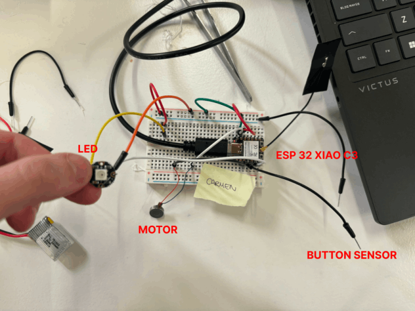

An anxiety sensing necklace that guides you through breathing exercises and signals your anxiety to your partner
By Carmen and Sophie
Our interests lied in exploring the intersection of technology, emotions, and mental health. We wanted to create something that would make the imperceptible aspects of our emotional state more tangible. Understanding oneself and others better was a driving force behind this project. In a world where anxiety and depression is on the rise, we therefore thought of ways to sense and visualise anxiety through technology to help us and others address this uncomfortable feeling.
We decided to create a wearable device that would sense your anxiety and help you follow breathing exercises guided by vibrations to calm down. As anxiety is often an irrational feeling, it is hard to communicate to others. What is more, most people are not even conscious of the fact that they are anxious. This is why we decided to make this device collaborative: when it senses that you're anxious, the device sends a signal to a paired device (a partner, a friend etc.), which helps them understand how you're feeling and act accordingly, without needing any communication from your side.
Detecting anxiety through technology poses challenges, especially when calibrating sensors like those for heartbeat. To overcome this, we focused on detecting fidgeting as a proxy indicator for anxiety. We initially considered a ring design but quickly realised that the electronics would be too bulky for a ring, so we opted for a necklace. The pendant houses all necessary electronics, including a vibration motor for breathing exercises, a capacitive wire to detect fidgeting, and an LED light to indicate a partner's fidgeting. We decided not to place the vibration motor in the chain due to wiring constraints.
(The picture is a very raw first prototype, we plan to improve it in the future... Keep in mind that we had 3 days to develop this prototype...)
The initial step involved coding for the vibration motor, which initially appeared straightforward. The vibration motor operated analogically, so our task was to control its intensity within the range of 0 to 255. To simulate ascending and descending vibrations mimicking a breathing exercise, we programmed the motor to vibrate at specific intensities for 20 milliseconds using delays. We enhanced the functionality by programming the motor to buzz twice when touched for the first time, indicating the imminent start of the breathing exercise. Additionally, we implemented a condition requiring the user to complete at least five breathing repetitions to stop the vibration motor. Although the initial code was functional, using delays to mark the breathing exercise posed challenges for subsequent iterations of the code setup.
We used MQTT which uses WiFi to connect the two necklaces together, allowing one necklace to light up when the other was being touched. Initially, our implementation with delays in the touch-vibration code caused issues where the necklace failed to maintain MQTT connectivity during breathing exercises. To rectify this, we removed all delays and loops from the main loop to ensure continuous MQTT connection. However, this adjustment rendered the vibration motor incapable of executing the ascending and descending exercises without delays. Despite attempts to create custom delays using the millis function, we encountered challenges, leading us to temporarily set aside the ascending and descending actions and maintain a simple on/off functionality for the vibration motor.

3D printing process
Fail...
Rendered 3D model
Coding & electronics:
The code didn't let us connect to MQTT and do the breathing exercise at the same time because of delays. Moreover, the code without delays modified the vibration function to make the motor either on or off.
The ESP32 XIAO C3 didn't work with the touch sensor so we had to change the code from touchRead to digitalRead and change the electronics so it works as a button instead of a touch sensor.
We broke the battery :( So we needed to connect the necklace to a chargeable battery instead of having it free of wires.
3D printing:
The case did not print correctly at first so we added a raft for better adherence to the bed.
As we realised later in the iterations that we needed an external touch button and an external battery, we adapted our design adding two holes to integrate the cables.
We had big ambitions about this necklace during the ideation phase, but this was a humbling experience as we realised that developing what seem to be simple technology can be very cumbersome, especially in a short amount of time. We therefore scaled down on ambition.
We however both learned a lot on the job and both would like to take our project further to better understand how it feels to live with such technology on a daily basis, as a 1st person perspective design intervention. This would get us closer to temporarily experiencing the life of a cyborg.
We would also like to gather the data collected in a certain location to visualise anxiety at a given time and a given place, to see if visualising anxiety in a creative way would change our relationship to it. This would require the integration of a component that saves the data in the electronics.
This experience has enhanced my skills in design thinking, user experience, and interdisciplinary collaboration, which will be invaluable in future research endeavors.
Instead of incorporating a fixed breathing exercise of 5 breaths, we could integrate a sensor capable of detecting when the user becomes more relaxed, thereby automatically halting the breathing exercise.
Enhancing the pendant to be smaller, more aesthetically pleasing, and easier to hang would be beneficial. Additionally, we could explore making the LED display more subtle, improving the structure to attach the motor and explore alternative touch sensor options, perhaps throughout the surface of the pendant, to enhance user experience.
To address the challenge of demonstrating the ascending and descending vibration motor effects without delays, we need to explore alternative methods or technologies. This could involve upgrading to a more advanced ESP32 Xiao model, such as the S3, which may offer additional capabilities, such as an integrated touch sensor.
Incorporating an AI feature that sends notifications when the user is fidgeting, encouraging self-reflection on anxiety triggers through journaling, adds a valuable dimension to the necklace's functionality. This feature has the potential to foster mindfulness and self-awareness among users.

No Code Website Builder